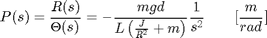
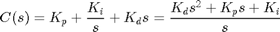
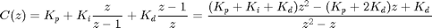
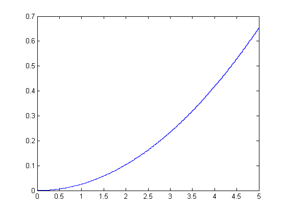
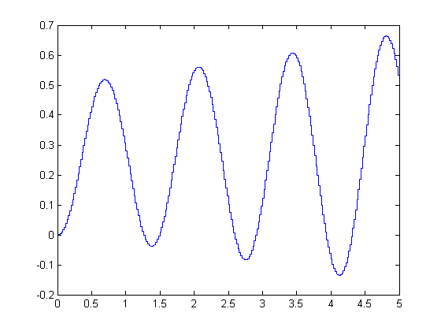
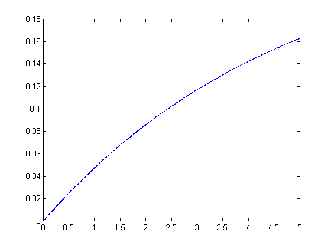
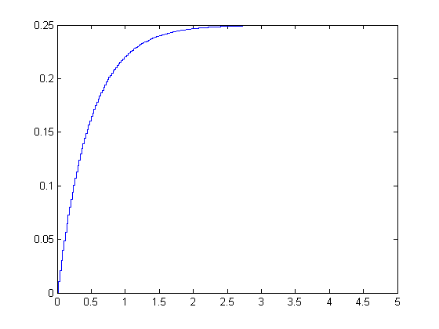

Ball & Beam: Digital PID Controller Design
Key MATLAB commands used in this tutorial are: tf , c2d , step , stairs , feedback
Contents
The open-loop transfer function of the plant for the ball and beam experiment is given below:
(1)
The design criteria for this problem are:
- Settling time less than 3 seconds
- Overshoot less than 5%
To see the derivation of the equations for this problem refer to the Ball & Beam: System Modeling page.
Digital PID controller
If you refer to any of the PID control problem for continuous systems, the PID transfer function was expressed as
(2)
As you noticed the above transfer function was written in terms of s. For the digital PID control, we use the following transfer function in terms of z.
(3)
Discrete Transfer Function
The first thing to do here is to convert the above continuous system transfer function to an equivalent discrete transfer function. To do this, we will use the MATLAB function c2d. To use c2d, we need to specify three arguments: system, sampling time (Ts), and the 'method'. You should already be familiar with how to create a system from numerator and denominator matrices. The sampling time should be smaller than 1/(30*BW) sec, where BW is the closed-loop bandwidth frequency. The method we will use is the zero-order hold ('zoh'). Assuming that the closed-loop bandwidth frequency is around 1 rad/sec, let the sampling time be 1/50 sec/sample. Now we are ready to use c2d. Enter the following commands to an m-file. Running this m-file in the MATLAB command window gives you the following matrices.
m = 0.111; R = 0.015; g = -9.8; L = 1.0; d = 0.03; J = 9.99e-6; s = tf('s'); P_ball = -m*g*d/L/(J/R^2+m)/s^2; Ts = 1/50; ball_d = c2d(P_ball,Ts,'zoh')
ball_d =
4.2e-05 z + 4.2e-05
-------------------
z^2 - 2 z + 1
Sample time: 0.02 seconds
Discrete-time transfer function.
Open-loop response
Now we will observe the ball's response to a step input of 0.25 m. To do this, enter the following commands into a new m-file and run it in the command window. You should see the following response.
numDz = 0.0001*[0.42 0.42]; denDz = [1 -2 1]; Ts = 1/50; ball_d = tf(numDz,denDz,Ts); [x,t] = step(0.25*ball_d,5); stairs(t,x)
From this plot, it is clear that the open-loop system is unstable causing the ball to roll off the end of the beam.
Proportional control
Now we will add proportional control (Kp) to the system and obtain the closed-loop system response. For now let Kp equal 100 and see what happens to the response. Enter the following commands into a new m-file and run it in the command window.
Ts = 1/50;
z = tf('z',Ts);
dP_ball = 0.0001*(0.42*z + 0.42)/(z^2 - 2*z + 1);
Kp=100;
sys_cl = feedback(Kp*dP_ball,1);
[x,t] = step(0.25*sys_cl,5);
stairs(t,x)
 As you can see, the addition of proportional control does not make the system stable. You may try to increase the proportional gain (Kp) and confirm that the system remains unstable.
Proportional-derivative control
Now we will add a derivative term to the controller. Keep the proportional gain (Kp) equal to 100, and let the derivative gain (Kd) equal to 10. Copy the following code to an new m-file and run it to view the system response.
Ts = 1/50;
z = tf('z',Ts);
dP_ball = 0.0001*(0.42*z + 0.42)/(z^2 - 2*z + 1);
Kp=100;
Kd=10;
C = ((Kp+Kd)*z^2 - (Kp+2*Kd)*z + Kd)/(z^2 + z);
sys_cl = feedback(C*dP_ball,1);
[x,t] = step(0.25*sys_cl,5);
stairs(t,x)
 Now the system is stable, but the rise time is too long. From the PID Tutorial page, we see that the increasing the proportional gain (Kp) will decrease the rise time. Let's increase the proportional gain (Kp) to 1000 and see what happens. Change Kp in the above m-file from 100 to 1000 and rerun it in the command window. You should see the following step response.
Kp=1000; Kd=10; C = ((Kp+Kd)*z^2 - (Kp+2*Kd)*z + Kd)/(z^2 + z); sys_cl = feedback(C*dP_ball,1); [x,t] = step(0.25*sys_cl,5); stairs(t,x)
As you can see, all of the design requirements are satisfied. For this particular problem, no implementation of an integral control was needed. But remember there is more than one solution for a control problem. For practice, you may try different P, I and D combinations to obtain a satisfactory response.